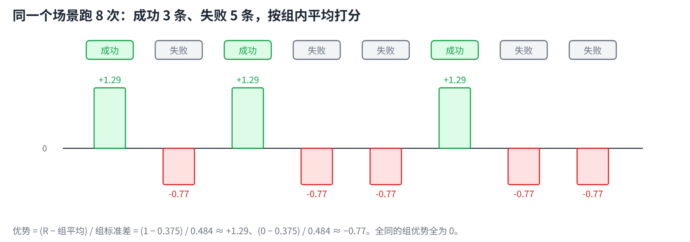
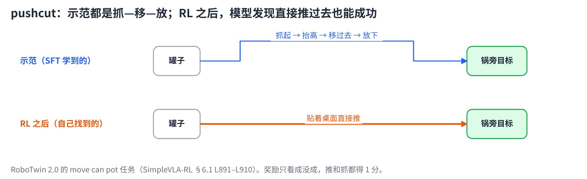
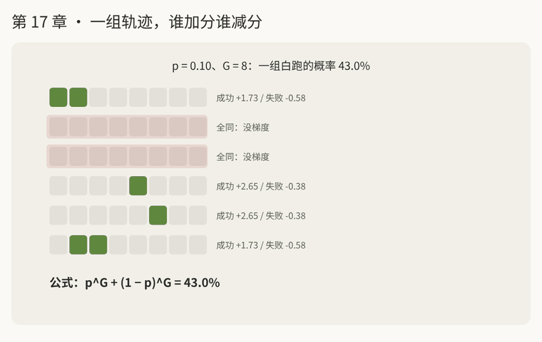

第 17 章 · 在线 RL：SimpleVLA-RL，只看成没成，也能把 17% 练到 92%
本地运行
git clone https://github.com/wikieden/vla-from-scratch
cd vla-from-scratch/code/notebooks
pip install jupyterlab torch numpy
jupyter lab ch17_online_rl.ipynb也可以下载后直接用 VS Code 打开 .ipynb 运行。需要 GPU 的章节在 Colab 里选「代码执行程序 → 更改运行时类型 → GPU」。
本章回答：第 12 章的 Recap 是拿已经录好的数据打"比平时好 / 差"的标签。能不能让 VLA 在仿真里自己一遍遍试、只告诉它"成了 / 没成"，就练出来？GRPO 不要价值网络，优势是怎么算的？为什么一组全成功或全失败的轨迹要扔掉？
讲解日期：2026-11-24 · 上一章：第 16 章 跨本体 · 下一章：第 18 章 跑得快
对应原文：materials/text/papers/simplevla-rl-2509.09674.txt（下称 SVR）摘要 L25–L35；§2.3 GRPO L275–L300（式 7、8）；§3.1 rollout L340–L360；§3.2 二值奖励 L395–L412；§3.3 三个探索技巧 L429–L455；骨干 L582–L595；表 2 L548–L557；表 5 L712–L736；§6.1 pushcut L875–L910
本章缩写：RL = Reinforcement Learning（强化 / 学习）；GRPO = Group Relative Policy Optimization（组 / 相对 / 策略 / 优化）；PPO = Proximal Policy Optimization（近端 / 策略 / 优化）；SFT = Supervised Fine-Tuning（监督 / 微调）；KL = Kullback–Leibler（散度，两个分布差多少）；veRL = Volcano Engine Reinforcement Learning（火山引擎的 LLM 强化学习框架）；SR = Success Rate（成功率）。全表见 appendix-glossary.md
讲解
第 1 步：为什么在仿真里自己试（2026-11-24）
类比：学骑自行车。 看再多别人骑车的录像（SFT），第一次上车还是会摔；真正学会是自己骑、摔了再骑。没人告诉你每一下车把该转几度，只知道"这次骑到头了没有"。
SFT 的天花板：第 2 章的行为克隆只能抄示范。示范少时，长任务几乎学不会。SVR 表 5（L712–L736，LIBERO，OpenVLA-OFT 骨干）：
| 每个任务几条示范 | 只做 SFT | SFT + SimpleVLA-RL |
|---|---|---|
| 1 条（One-Trajectory） | 平均 48.9%；LIBERO-Long 17.3% | 平均 96.9%；LIBERO-Long 91.7% |
| 全部 500 条（Full-Trajectory） | 平均 91.0% | 平均 99.1% |
（摘要和贡献列表里写的是 17.1%（L196），表 5 是 17.3%，以表为准。）
一条示范 + RL 的 96.9%，已经超过 500 条示范只做 SFT 的 91.0%。
和第 12 章 Recap 的区别：
| Recap（第 12 章） | SimpleVLA-RL（本章） | |
|---|---|---|
| 数据从哪来 | 录好的数据 + 真机上跑出来的数据，离线打标签 | 仿真里当场一遍遍跑（在线） |
| 奖励 | 价值函数估出"比平时好多少" | 只有 成功 = 1、失败 = 0 |
| 要不要价值网络 | 要 | 不要（GRPO 用组内比较代替） |
一句话：示范少的时候，让模型自己试、只看成没成，比多抄示范更有用。
第 2 步：只看成没成，组内比较算优势（GRPO）（2026-11-24）
类比：同一道题让 8 个学生做，按"比全班平均好多少"打分。 不需要一个老师先估计"这题本来该得几分"，直接拿同组的人比。
怎么做（SVR §3，L331–L337）：
- 同一个初始场景，让模型（温度采样）跑 \(G\) 条轨迹；
- 每条轨迹只得一个分：成功 \(R = 1\)，失败 \(R = 0\)（L397–L408）；这个分平均分给轨迹里的每个动作 token；
- 组内标准化，算出每条轨迹的优势（式 8，L292–L296）：
- 用 PPO 式的裁剪目标更新（式 7）：成功轨迹里的 token 概率往上推，失败的往下压，每次推的幅度被 \([1-\epsilon, 1+\epsilon]\) 限住。
例：\(G = 8\)，成功 3 条。平均 \(3/8 = 0.375\)；这里用总体标准差 \(\sqrt{0.375 \times 0.625} \approx 0.484\)：
| R | \(\hat A\) | |
|---|---|---|
| 成功的 3 条 | 1 | \((1 - 0.375)/0.484 \approx +1.29\) |
| 失败的 5 条 | 0 | \((0 - 0.375)/0.484 \approx -0.77\) |
成功得少时，每条成功轨迹的优势更大：稀有的成功更值得学。
为什么必须是"词"（L340–L357）：PPO / GRPO 需要每个动作的概率。第 15 章 OFT 的 L1 头直接吐一个数，没有概率可算；所以 SVR 把 OFT 的输出改回 LLaMA 的词表头（离散动作 token + 交叉熵），只保留并行解码和动作分块（L586–L592）。

图 17-1 · 同一个场景跑 8 次，按组内平均打分；不需要价值网络。
一句话：同题多做几遍，比组内平均好就加分，差就减分。
第 3 步：三个让它多探索的小技巧（2026-11-24）
问题：二值奖励下，一组 8 条全成功或全失败时，所有 \(R_i\) 一样，分子全是 0，优势全是 0，这一组白跑了（L432–L436）。
一组白跑的概率：每条成功率 \(p\)、各条独立时：
例：\(G = 8\)。模型已经很强（\(p = 0.9\)）或还很弱（\(p = 0.1\)）时，\(P \approx 0.43\)：将近一半的组没有梯度。
三个技巧（L429–L455，图 3）：
| 技巧 | 做法 | 为什么 |
|---|---|---|
| 动态采样（Dynamic Sampling） | 扔掉全成功 / 全失败的组，继续采，直到这一批全是"有成有败"的组 | 每一组都有梯度 |
| 放宽上界（Clip Higher） | 裁剪区间从 \([0.8, 1.2]\) 改成 \([0.8, 1.28]\) | 原来低概率的好动作，每次能多涨一点（0.10 最多涨到 0.128，而不是 0.12） |
| 提高采样温度 | 温度从 1.0 提到 1.6 | 分布更平，更常试不常见的动作 |
温度的例子（logit 是编的）：三个候选动作 logit 为 \([2, 1, 0]\)：
| 温度 | 三个动作的概率 |
|---|---|
| 1.0 | 0.665 / 0.245 / 0.090 |
| 1.6 | 0.549 / 0.294 / 0.157 |
第三个动作被试到的机会翻了快一倍。
场景代码：SVR 给的 rollout 函数（Listing 1，L362–L389，veRL 改写版；+ 行是相对 LLM 版新加的，这里去掉标记、加中文注释）：
def rollout(policy, dataset, number_sample=8, max_steps=None):
rollout_dataset = []
for batch in dataset:
batch = batch.repeat(number_sample) # 同一场景复制 G = 8 份
envs = env_process_pool.submit(batch.initialize) # 并行开 8 个仿真环境
states = env_process_pool.submit(envs.setup)
for t in range(max_steps):
actions = policy.generate(states, temperature=1.0) # 对动作 token 温度采样（§3.3 再提到 1.6）
rollout_dataset.append({f"{e.name}_step_{t}": (s, a) for e, s, a in zip(envs, states, actions)})
states, dones = env_process_pool.submit(envs.step, actions) # 和 LLM 不同：每步都和环境交互
active = [(e, s) for e, s, d in zip(envs, states, dones) if not d]
if not active: # 全部结束就停
break
envs, states = zip(*active)
return rollout_dataset
之后每条轨迹按"成没成"拿 0 或 1（第 2 步），再算组内优势。
一句话：全同的组没梯度要扔掉；放宽上界、升温，让好但罕见的动作有机会冒头。
第 4 步：pushcut，RL 学出了示范里没有的招（2026-11-24）
类比：考试里发现了更快的解法。 老师只教了一种解法，学生做多了自己发现一条捷径；只要答案对，就得分。
原文（§6.1，L891–L910）：RoboTwin 2.0 的"把罐子移到锅旁边"任务里，所有示范都是抓—移—放。RL 训练后，模型自己发现：不抓，直接把罐子推过去，更快、成功率也高。作者叫它 pushcut（push-driven shortcut，推出来的捷径），类比 DeepSeek-R1 的"顿悟时刻"。
为什么 SFT 学不出来：SFT 只会抄示范里出现过的动作分布（第 2 章）；RL 的目标是"成功"，只要推也能成功，推的那些 token 就会被加分。
两面性：奖励只看"成没成"，模型就会找一切能成的办法。推罐子在仿真里没问题，真机上可能把东西推翻；奖励没写进去的约束（别碰倒、别太用力），模型不会自己遵守。这和《从零学强化学习》讲的"奖励写什么就学什么"是同一件事。

图 17-2 · pushcut：同样到达目标，RL 找到了示范里没有的路线。
一句话：只看结果，模型会自己找捷径；捷径好不好，取决于奖励有没有把规矩写进去。
动画演示：一组轨迹，谁加分谁减分

可交互版：animations/17-online-rl.html（滑块：单条成功率 p 0–1、组大小 G 2–16；勾选：动态采样）。
怎么看：
- 每行是一组 G 条轨迹，绿 = 成功、灰 = 失败，右边是这组的优势（第 2 步）；
- 全同的组标红，表示"没梯度"；底部统计白跑的比例，和 \(p^G + (1-p)^G\) 对照（第 3 步）；
- 打开动态采样，红色的组被扔掉、补采新的；
- 播放：p = 0.1 → 0.375 → 0.9 → 0.9 + 动态采样 → G 改成 16。
练习与作答记录
题 1（第 2 步）：\(G = 8\)，成功 2 条。成功轨迹和失败轨迹的优势各是多少（用总体标准差）？和第 2 步"成功 3 条"比，成功轨迹的优势变大还是变小？
作答记录：（待作答）
题 2（第 3 步）：单条成功率 \(p = 0.7\)。组大小 \(G = 4\) 和 \(G = 16\) 时，一组全同（没梯度）的概率各是多少？组大一点有什么好处、什么代价？
作答记录：（待作答）
题 3（第 2、4 步）：为什么 SimpleVLA-RL 不直接用第 15 章 OFT 的 L1 回归头？如果一定要对连续动作头做 RL，你觉得缺的是什么？
作答记录：（待作答）
口诀
看录像学不会骑车，自己骑、只问到头没；
同题八人做，比平均好加分，差的减分；
全对全错没得比，扔掉再采；放宽上界、升温多试；
只看结果会抄近道，规矩要写进奖励。
本章复习卡片
V41（GRPO 优势 \((R_i - \text{mean})/\text{std}\)，二值奖励，1 条示范 48.9% → 96.9%）、V42（全同组概率 \(p^G + (1-p)^G\)；动态采样、Clip Higher 0.28、温度 1.6；pushcut）。练习做完后，按答错、卡住的地方再补。
附录 · 延伸阅读
留给以后深入学习用，不影响本章主线。★ 是建议先读的。
推荐阅读
| 读什么 | 读哪里 | 读它为了什么 |
|---|---|---|
| ★ SimpleVLA-RL（Li 等，2025） | simplevla-rl-2509.09674.txt §2.3、§3、表 5、§6.1 |
本章原文 |
| 第 12 章 RL 后训练 Recap | 优势条件化 | 离线 vs 在线的对照 |
| 《从零学强化学习》第 23 章 PPO | 裁剪目标 | 式 7 的来历 |
| 《从零学强化学习》第 21 章 基线 | 减去基线降方差 | 组平均就是一个基线 |
| 《从约束推导 AI Infra》第 60 章 RL 系统 | rollout 和训练怎么排 | 在线 RL 的系统开销 |
| DAPO（Yu 等，2025） | 动态采样、Clip Higher，本地无原文 | 两个技巧的出处 |
数学原理
- 基线：策略梯度里减去任何不依赖动作的数都不改变期望，只降方差；组平均就是一个现成的基线。
- 标准化：再除以标准差，让不同难度的场景梯度尺度差不多。
- 全同概率：独立的 G 次伯努利试验全为 1 或全为 0，概率 \(p^G + (1-p)^G\)。
- 温度：\(\mathrm{softmax}(z/T)\)，T > 1 分布变平，T < 1 变尖。
公式清单
| 公式 | 意思 |
|---|---|
| \(R_i \in \{0, 1\}\) | 二值结果奖励 |
| \(\hat A_i = (R_i - \mathrm{mean}\,R)/\mathrm{std}\,R\) | 组内相对优势（式 8） |
| \(\min(r\hat A,\ \mathrm{clip}(r, 1-\epsilon_l, 1+\epsilon_h)\hat A)\) | PPO 式裁剪，SVR 取 \(\epsilon_l = 0.2\)、\(\epsilon_h = 0.28\) |
| \(P(\text{全同}) = p^G + (1-p)^G\) | 一组白跑的概率 |
| \(\mathrm{softmax}(z/T)\) | 温度采样 |
代码对照：把本章的数字用代码算一遍
纯 Python。代码在仓库本地
vla-deep-dive/solutions/chapter-code/ch17_online_rl.py，配套测试tests/test_ch17.py：
bash cd vla-deep-dive/solutions/chapter-code uv run python ch17_online_rl.py uv run pytest tests/test_ch17.py
讲义 ↔ 代码：
| 讲义 | 写法 | 跑出来 |
|---|---|---|
| 第 1 步 | TABLE5 |
48.9 → 96.9；91.0 → 99.1 |
| 第 2 步 | group_advantages(rewards) |
3/8 成功：+1.29 / −0.77 |
| 第 3 步 | p_all_same(p, g) |
p = 0.9、G = 8：0.43 |
| 第 3 步 | clip_ratio_ceiling(0.10, 0.28)、softmax_t([2, 1, 0], 1.6) |
0.128；0.549 / 0.294 / 0.157 |
代码里才看得到的 3 件事：
group_advantages在全同时返回全 0，而不是除以 0 报错；真实实现（veRL）会在分母上加一个很小的数。- 这里用总体标准差（除以 G）；
torch.std默认除以 G − 1，数会稍大一点，结论不变。 - 二值奖励"平均分给每个 token"，所以同一条轨迹里所有 token 的优势相同；长轨迹和短轨迹在式 7 里先按长度平均再按组平均。
自己改一改（不影响练习答案）：
- 用
random模拟 1000 组，验证p_all_same的公式。 - 把
softmax_t的温度从 0.5 扫到 2.0，画出第三个动作的概率。 - 给
group_advantages换成"成功 = 1、失败 = −1"，看优势有没有变。